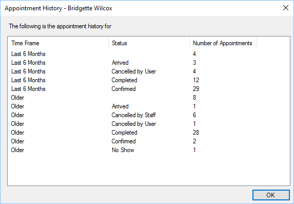

The appointment history can be shown for each customer when creating or editing an
appointment.

The history is broken down into the last six months of data, grouped by Status and older
appointments grouped by Status.
This is provided for information only for staff members to consider when booking an
appointment.